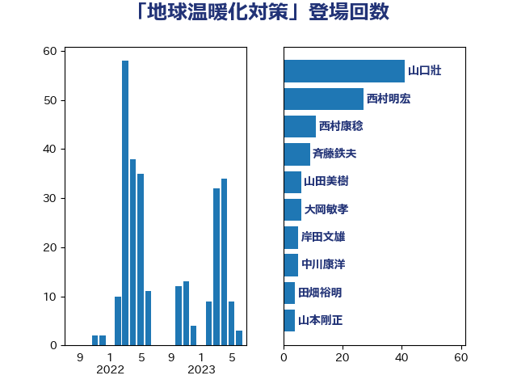

単語「地球温暖化対策」

| 山口壯 | 自由民主党 | 41 回 |
| 西村明宏 | 自由民主党 | 27 回 |
| 西村康稔 | 自由民主党 | 11 回 |
| 斉藤鉄夫 | 公明党 | 9 回 |
| 山田美樹 | 自由民主党 | 6 回 |
| 大岡敏孝 | 自由民主党 | 6 回 |
| 岸田文雄 | 自由民主党 | 5 回 |
| 中川康洋 | 公明党 | 5 回 |
| 田畑裕明 | 自由民主党 | 4 回 |
| 山本剛正 | 日本維新の会 | 4 回 |
| 国定勇人 | 自由民主党 | 4 回 |
| 田嶋要 | 立憲民主党 | 3 回 |
| 櫛渕万里 | れいわ新選組 | 3 回 |
| 斎藤アレックス | 国民民主党 | 3 回 |
| 平山佐知子 | 無所属 | 3 回 |
| 関芳弘 | 自由民主党 | 2 回 |
| 遠藤良太 | 日本維新の会 | 2 回 |
| 足立康史 | 日本維新の会 | 2 回 |
| 福島伸享 | 無所属 | 2 回 |
| 福山哲郎 | 立憲民主党 | 2 回 |
| 礒崎哲史 | 国民民主党 | 2 回 |
| 田島麻衣子 | 立憲民主党 | 2 回 |
| 田中健 | 国民民主党 | 2 回 |
| 宮崎雅夫 | 自由民主党 | 2 回 |
| 宮崎勝 | 公明党 | 2 回 |
| こやり隆史 | 自由民主党 | 2 回 |
| 高橋千鶴子 | 日本共産党 | 1 回 |
| 高木陽介 | 公明党 | 1 回 |
| 青木愛 | 立憲民主党 | 1 回 |
| 長友慎治 | 国民民主党 | 1 回 |
| 金子恭之 | 自由民主党 | 1 回 |
| 進藤金日子 | 自由民主党 | 1 回 |
| 足立敏之 | 自由民主党 | 1 回 |
| 谷田川元 | 立憲民主党 | 1 回 |
| 角田秀穂 | 公明党 | 1 回 |
| 西岡秀子 | 国民民主党 | 1 回 |
| 萩生田光一 | 自由民主党 | 1 回 |
| 舩後靖彦 | れいわ新選組 | 1 回 |
| 笠井亮 | 日本共産党 | 1 回 |
| 竹詰仁 | 国民民主党 | 1 回 |
| 秋野公造 | 公明党 | 1 回 |
| 福田昭夫 | 立憲民主党 | 1 回 |
| 神津たけし | 立憲民主党 | 1 回 |
| 石川博崇 | 公明党 | 1 回 |
| 石原宏高 | 自由民主党 | 1 回 |
| 熊谷裕人 | 立憲民主党 | 1 回 |
| 滝沢求 | 自由民主党 | 1 回 |
| 源馬謙太郎 | 立憲民主党 | 1 回 |
| 浜野喜史 | 国民民主党 | 1 回 |
| 河西宏一 | 公明党 | 1 回 |
| 比嘉奈津美 | 自由民主党 | 1 回 |
| 松木けんこう | 立憲民主党 | 1 回 |
| 岩田和親 | 自由民主党 | 1 回 |
| 山岡達丸 | 立憲民主党 | 1 回 |
| 小野泰輔 | 日本維新の会 | 1 回 |
| 小宮山泰子 | 立憲民主党 | 1 回 |
| 寺田静 | 無所属 | 1 回 |
| 太田房江 | 自由民主党 | 1 回 |
| 吉田豊史 | 無所属 | 1 回 |
| 古賀篤 | 自由民主党 | 1 回 |
| 勝俣孝明 | 自由民主党 | 1 回 |
| 務台俊介 | 自由民主党 | 1 回 |
| 佐藤啓 | 自由民主党 | 1 回 |
| 住吉寛紀 | 日本維新の会 | 1 回 |
| 中谷真一 | 自由民主党 | 1 回 |
| 中田宏 | 自由民主党 | 1 回 |
| 中島克仁 | 立憲民主党 | 1 回 |
| 三浦信祐 | 公明党 | 1 回 |